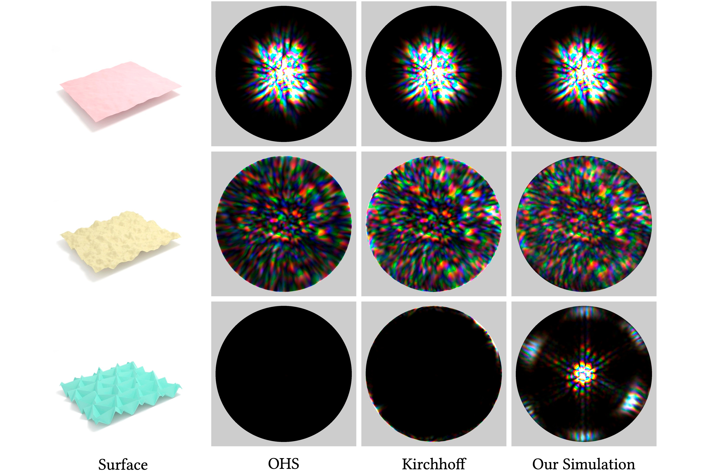
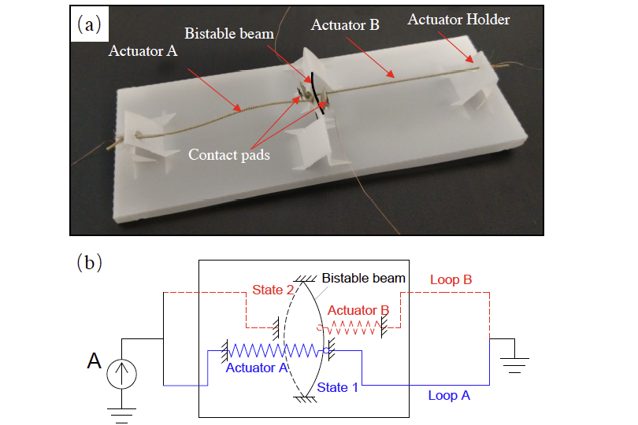
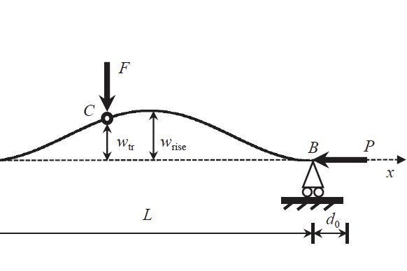

About Me
I am a PhD Candidate at Cornell University, advised by Prof. Steve Marschner. My current research focuses on realistic appearance modeling of materials and physically based rendering using wave optics. Before coming to Cornell, I pursued my undergraduate study at University of California, Los Angeles (UCLA), where I received a Bachelor of Science in Applied Mathematics and a Bachelor of Arts in Linguistics and Computer Science. I worked with Prof. Ankur Mehta and Prof. Marcus Roper during my time at UCLA.
Selected Publications
A Full-Wave Reference Simulator for Computing Surface Reflectance

Yunchen Yu, Mengqi Xia, Bruce Walter,
Eric Michielssen, Steve Marschner
Rapid Design of Mechanical Logic with Quasi-Static Electromechanical Modeling

Wenzhong Yan*, Yunchen Yu*, Ankur Mehta
Analytical Modeling for Rapid Design of Bistable Buckled Beams

Wenzhong Yan, Yunchen Yu, Ankur Mehta
Teaching Experience
CS 1112, Cornell University
Teaching Assistant
Fall 2022, Spring 2023
Education
-
Ph.D. in Computer ScienceCornell University2020 - present
-
B.S. in Applied Mathematics B.A. in Linguistics and CSUCLA2017 - 2020
Awards
-
Sherwood Prize, UCLATo recognize overall outstanding achievement and exceptional performance in mathematics at the undergraduate level.
-
College Honors, UCLAAwarded to undergraduate students upon successful completion of the College Honors program.
-
Summa Cum LaudeLatin honors awarded to undergraduate student according to overall grade-point average (GPA) at graduation.
Language
- Mandarin (Native)
- English (Professional)